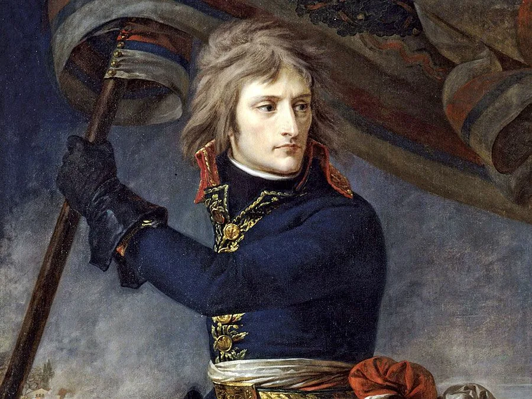
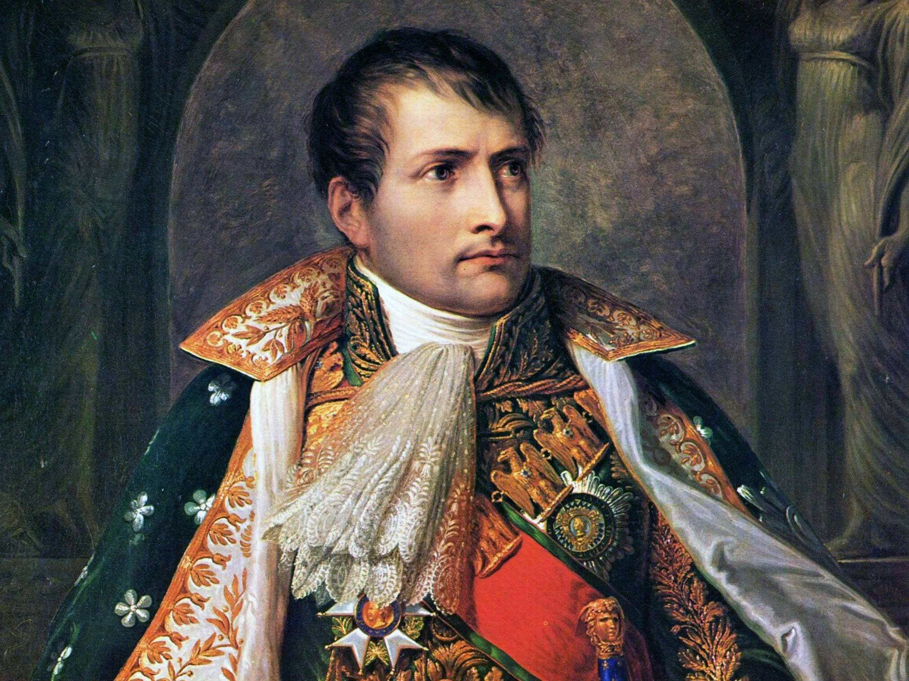
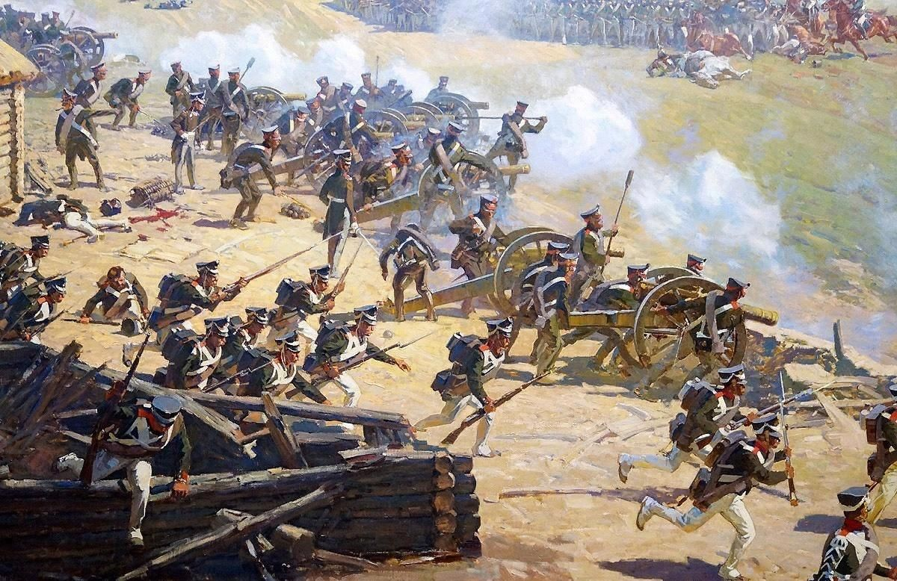
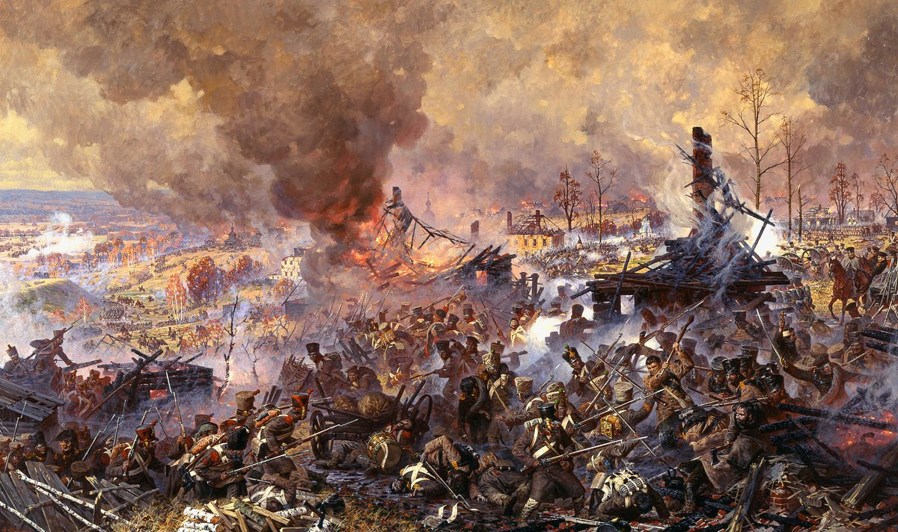
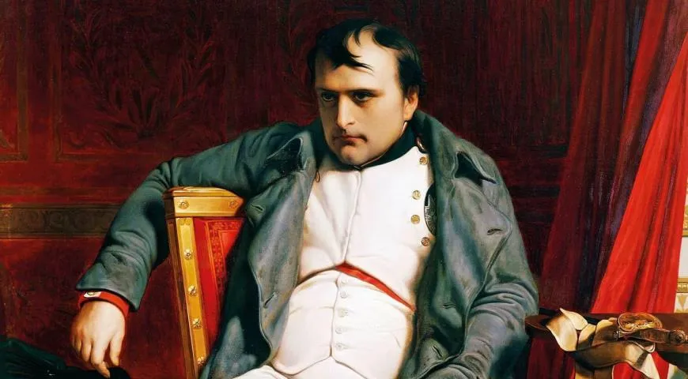
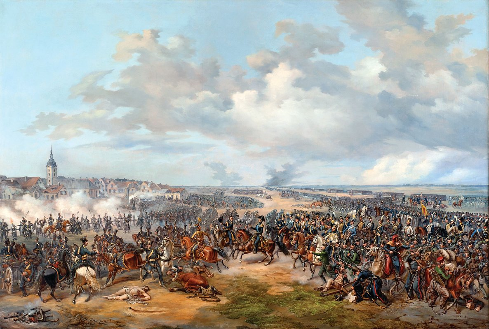

Наполеон I Бонапарт (15 августа 1769, Аяччо, Корсика —
5 мая 1821, Лонгвуд, остров Святой Елены)
— французский государственный и военный деятель,
император французов в 1804–1814 и 1815 годах.
РАННИЕ ГОДЫ
Будущий полководец и император Франции родился 15 августа 1769 года
под именем Наполеоне Буонапарте в городе Аяччо на острове Корсика
в семье небогатого местного аристократа
Как и Суворов, в детстве Наполеоне не отличался крепким здоровьем
и обожал читать, активно изучая военное дело.
Мальчик начал учить французский язык только в возрасте около десяти лет.
Учился в военном лицее, затем в кадетской школе в Бриенн-ле-Шато,
которую окончил в 1784 году и перешел в Парижскую военную школу.
В 1785 году молодой человек был выпущен в чине младшего лейтенанта
и начал службу в артиллерийском полку. Поскольку в том же году умер его отец,
Наполеонy пришлось взять длительный отпуск и поехать на Корсику
помогать улаживать финансовые дела семьи.

Начало службы
В 1788 году молодой офицер вернулся в полк, но бедному корсиканскому дворянину
в королевской армии Франции практически не было возможностей
для быстрого продвижения по служебной лестнице.
В том же году Буонапарте попробовал записаться в русскую армию, пойдя на войну с Турцией,
но узнав, что туда принимают с понижением на один чин, отказался от намерения.
Карьерные перспективы для Буонапарте открылись в 1789 году,
с началом Великой французской революции,
свергшей, а затем казнившей короля Людовика ХVI. Семья офицера приветствовала новые порядки,
а его брат Люсьен вступил в якобинский клуб.
В республиканской армии в июне 1792 года Наполеоне стал капитаном,
а в феврале 1793-го участвовал в своей первой боевой операции, которая закончилась неудачей.
9 марта 1796 года генерал женился на Жозефине де Богарне, урожденной Мари Жозефа Роз Таше де ла Пажери.
После свадьбы военачальник офранцузил свое имя и фамилию и стал именоваться Наполеоном Бонапартом.
В 1796 году молодой и энергичный полководец был назначен
главнокомандующим французскими республиканскими войсками в Италии,
разобщив, а затем поочередно нанеся поражение войскам
сардинского генерала Микеланджело Алессандро Колли-Марки и австрийского генерала Иоганна Петера Болье.
Итальянская кампания завершилась в 1797-м полной победой войск Наполеона,
который стал во Франции крайне популярной фигурой.
В 1798-1799 годах Наполеон возглавил военную экспедицию в Египет и Сирию,
разгромив там османские войска и взяв Александрию, Газу и Яффу.
Узнав о том, что французское правительство находится в глубоком кризисе,
Бонапарт вернулся в Париж и 9-10 ноября 1799 года стал активным участником государственного переворота,
в результате чего правление Директории было заменено властью консулов.

На посту первого консула
Наполеон был избран первым консулом на десять лет,
постепенно сосредоточив в своих руках всю власть в стране.
На этом посту ему пришлось вести войну с армиями государств,
участников Второй антифранцузской коалиции.
В ходе сражения при Маренго 14 июля 1800 года французские войска,
руководимые Наполеоном, наголову разгромили австрийские соединения.
Бонапарт сочетал военные успехи с дипломатическими:
8 октября 1801 года между Францией и Россией был подписан Парижский мирный договор,
27 марта 1802 года Наполеон заключил Амьенский мир с Великобританией.
Бонапарт создал мощную полицию общественной безопасности,
а также тайную полицию и закрыл большинство из существовавших газет.
Данные меры укрепили власть Наполеона, ставшего с 1802 года пожизненным консулом.
2 декабря 1804 года в соборе Парижской богоматери он провозгласил себя
французским императором под именем Наполеон I.
Во время войны с армиями Третьей антифранцузской коалиции 2 декабря 1805 года в сражении при Аустерлице
Бонапарт разгромил русско-австрийские войска под командованием генерала Михаила Голенищева-Кутузова.
Это привело к выходу Австрии из войны.
Франция стала сильнейшей державой континента,
значительно расширив свою территорию и держа под контролем Западную и Центральную Европу.
Не сложила оружие лишь островная Великобритания, против которой Наполеон вел политику континентальной блокады.
Когда Португалия отказалась к ней примкнуть, французский император направил туда войска.
Для контроля над Испанией Бонапарт объявил в 1808 году королем страны своего брата Жозефа.
Это вызвало в Испании возмущение, которое вылилось во Франко-испанскую войну 1808-1814 годов
при активном участии британских войск на стороне Мадрида.
Видя, что Наполеон прочно увяз в Испании, 3 апреля 1809 года австрийский император Франц I
объявил войну Франции. В сражении под Асперном 21-22 мая 1809 года австрийский полководец эрцгерцог Карл
нанес поражение Наполеону, но не стал преследовать отступавшие французские войска и тем самым дал им
необходимую передышку. Вскоре Бонапарт взял реванш за неудачу, разгромив 5-6 июля 1909 года войска Карла
в сражении при Ваграме. Окончательную точку в войне поставило поражение австрийцев
в Цнаймской битве 10-11 июля 1809 года.

Вторжение в Россию
Несмотря на мир с Россией, Наполеон был крайне недоволен политикой Александра I,
который официально вел морскую войну с Англией, а через посредников негласно торговал с нею.
При этом Петербург ввел высокий таможенный тариф на французские товары, приведя в бешенство Париж.
Существующие противоречия между Парижем и Санкт-Петербургом Наполеон,
по обыкновению, намеревался разрешить военной силой.
В конце 1811 года и в начале 1812-го Франция заключила договоры с Австрией и Пруссией,
согласно которым эти страны обязались выставить против России не менее 50 тысяч солдат.
В Великую армию также включались войска завоеванных государств — Саксонии и Баварии.
В ночь на 24 июня 1812 года армия французского императора (более 600 тысяч солдат и офицеров)
вторглась в Россию, переправившись через реку Неман неподалеку от города Ковно (ныне Каунас).
Предложение Александра I сесть за стол переговоров Наполеон отклонил:
"Я пришел, чтобы раз и навсегда покончить
с колоссом северных варваров.
Шпага вынута из ножен. Надо отбросить их в их льды,
чтобы в течение 25 лет они не вмешивались в дела
цивилизованной Европы. Александр видит,
что дело серьезно, что его армия разрезана;
он испуган и хочет помириться, но мир я подпишу в Москве"
Две русские армии, уклоняясь от генерального сражения, которого жаждал Бонапарт,
отходили вглубь страны, соединившись в районе Смоленска.
18 августа 1812 года русским главнокомандующим был назначен генерал от инфантерии
Михаил Голенищев-Кутузов.
14 сентября армия французского императора вступила в опустевшую Москву,
где планировался отдых для уставших и поредевших войск, а сам Бонапарт расположился со свитой в Кремле.
Вскоре Бонапарт почувствовал, что попал в ловушку. Город охватил сильный пожар,
на его предложения о мире Александр I не отвечал, партизаны все ощутимее били по
коммуникациям Великой армии, солдаты начали голодать, и дисциплина стала стремительно падать.
18 октября 1812 года русские войска неожиданно атаковали части маршала Иоахима Мюрата,
который, потеряв около четырех тысяч солдат, был вынужден отступить.
Наполеон понял, что слишком засиделся в негостеприимной Москве,
в которой зимовать из-за пожара было негде.
На следующий день 110-тысячная наполеоновская армия вместе с громадным обозом стала покидать Москву,
направляясь на Калугу, где Бонапарт рассчитывал основательно пополнить продовольственные запасы.
Путь по Старой Калужской дороге в районе Тарутино ему преграждала армия Кутузова.

К тому времени недостаток лошадей у французов привел к сильному ослаблению
кавалерийских и артиллерийских частей. Понимая это, французский император решил
не прорываться через укрепленные вражеские позиции, а обойти их, свернув на Новую Калужскую дорогу.
Однако Кутузов оперативно перебросил свои войска под Малоярославец,
перекрыв и это направление на Калугу.
24 октября 1812 года разгорелось ожесточенное сражение за Малоярославец,
который восемь раз переходил из рук в руки и сгорел почти дотла.
К концу дня город остался за французами, но русские войска на высотах южнее
препятствовали их движению на Калугу.
Утром 25 октября обе стороны готовились к продолжению боя и изучали диспозицию.
В этот момент казаки генерала от кавалерии Матвея Платова напали на лагерь французов
и едва не захватили в плен самого Наполеона.

Изгнание Наполеона из России
Это произвело на французского императора самое угнетающее впечатление,
и он потребовал от своего лекаря дать ему пузырек с ядом,
чтобы в случае чего не даться живым в руки противника.
Надо было спасать войска, и 26 октября Великая армия начала стратегическое наступление.
Русские части вели параллельное преследование, нанеся чувствительные удары
французскому арьергарду в ходе сражений под Вязьмой и Красным.
Окончательный разгром войск Наполеона произошел на реке Березине,
после чего Великая армия перестала существовать, а термин Berezina
прочно вошел во французский язык как синоним катастрофы:
из России вернулись на родину лишь 25 тысяч солдат.
5 декабря 1812 года, бросив остатки армии, Наполеон уехал в Париж,
обеспокоенный попыткой переворота под руководством генерала Клода-Франсуа Мале.
Русская кампания похоронила легенду о непобедимости Бонапарта,
однако он не терял надежды взять реванш за стратегическое поражение.
За несколько месяцев Наполеон собрал новую 300-тысячную армию, с которой вступил в войну
с войсками государств Шестой антифранцузской коалиции.
В сражениях 1813 года — при Лютцене, Бауцене, Дрездене — Бонапарт сумел нанести поражение
войскам союзников, однако его маршалы, в свою очередь, были разбиты в битвах под Кульмом,
на реке Кацбах, у Гросберена, при Денневице.
Французский император принял решение дать генеральное сражение,
которое решило бы судьбу всей кампании.
Оно состоялось с 16 по 19 октября 1813 года у немецкого города Лейпциг
и получило название «Битва народов»: в нем приняли участие с обеих сторон 560 тысяч солдат
и офицеров. Наполеоновская армия потеряла около 80 тысяч человек,
союзники — 54 тысячи солдат и офицеров, 23 тысячи из которых были русскими,
в том числе и герой 1812 года генерал-лейтенант Дмитрий Неверовский,
получивший смертельное ранение.

Поле боя осталось за союзниками, что привело к потере Наполеоном территорий
германских государств и Нидерландов. Французские войска потерпели поражение также и в Испании.
В январе 1814-го войска Шестой коалиции с разных сторон вторглись в пределы самой Франции.
30 марта русско-прусско-австрийские войска начали штурм Парижа,
гарнизон которого капитулировал к концу дня. На следующий день союзные части
во главе с Александром I и прусским королем Фридрихом Вильгельмом III
торжественно вступили во французскую столицу.
Известие об этом застало Наполеона в королевском замке города Фонтенбло,
в 70 километрах к юго-востоку от Парижа. Он активно собирал войска,
намереваясь взять реванш над противником. 3 апреля Сенат Франции провозгласил
отстранение Бонапарта от власти.
Отречение и бегство с острова Эльба
Войска ответили Наполеону одобрительными криками, однако маршалы не поддержали Бонапарта:
они устали воевать. Военачальники заявили, что нападение вызовет отмщение союзников,
которые в ответ сожгут Париж и предадут истреблению его жителей,
число которых превышало 700 тысяч человек.
6 апреля Бонапарт отрекся от престола в пользу своего малолетнего сына Наполеона II,
а в ночь на 13 апреля выпил яд, который носил с собой со времен сражения под Малоярославцем.
От долгого хранения яд не подействовал, и Бонапарт выжил.
Он был сослан на небольшой остров Эльба в Средиземном море,
с которого бежал 26 февраля 1815 года, а 20 марта без единого выстрела вступил в Париж.
Это вызвало войну с Седьмой антифранцузской коалицией. Собрав 125 тысяч солдат,
Наполеон решил бить противников по частям и 15 июня вторгся в пределы Бельгии.
На следующий день в битве при Линьи Бонапарт нанес поражение прусско-саксонской армии
генерал-фельдмаршала Гебхарда Леберехта Блюхера.
18 июня 1815 года у небольшого бельгийского селения Ватерлоо состоялась последняя битва
Наполеона Бонапарта, в которой французский полководец намеревался разгромить войска Веллингтона.
В генеральном сражении кампании с обеих сторон приняли участие 142 тысячи солдат и офицеров.
Атаки французской пехоты и кавалерии чередовались с контратакой тяжелой английской конницы.
В тот же день неподалеку развернулось сражение при Вавре,
в котором сошлись три корпуса под командованием французского маршала Эммануэля Груши
и войска прусского генерала Иоганна фон Тильмана.
При Ватерлоо и Наполеон, и Веллингтон надеялись на прибытие резервов — корпусов Груши
и прусских частей Блюхера. Однако Груши, занятый разгромом войск Тильмана,
так и не пришел на помощь своему императору. Напротив, появление солдат Блюхера
на поле боя изменило ход сражения в пользу союзников.
.jpg)